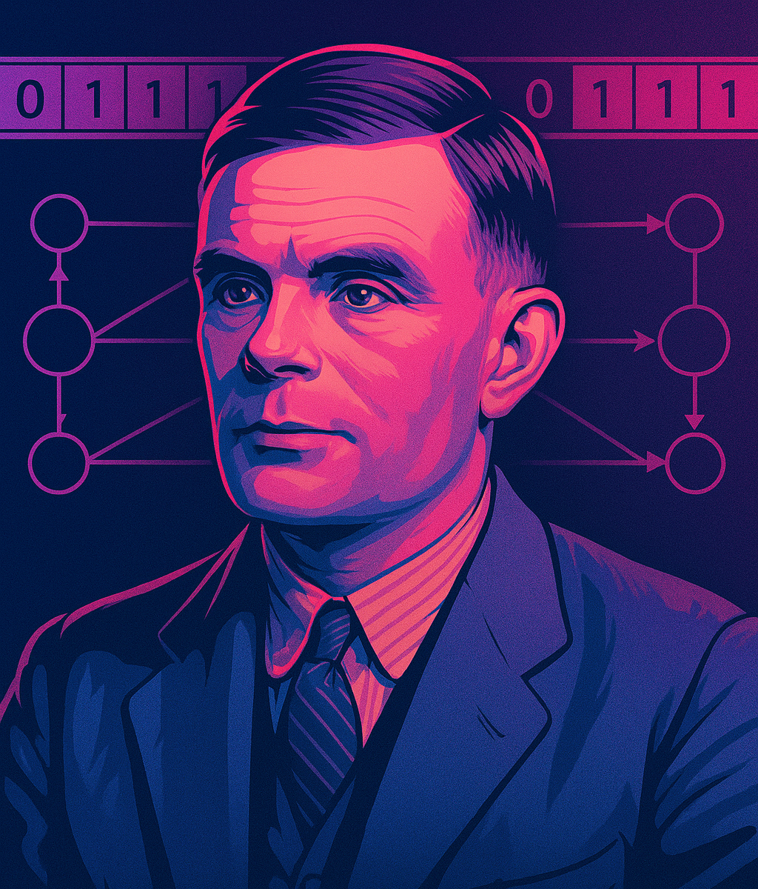

O que é a Máquina de Turing?
Criada pelo matemático Alan Turing em 1936, a Máquina de Turing é um modelo teórico fundamental para a ciência da computação. Apesar de sua simplicidade, ela representa a ideia de uma máquina capaz de resolver qualquer problema computacional, desde que esse problema possa ser descrito por um conjunto claro de instruções, conhecido como algoritmo.
Como funciona esse modelo?
Imagine uma fita infinita dividida em células, onde cada célula contém um símbolo — que pode ser um número, uma letra ou até um espaço em branco. Uma cabeça de leitura e escrita percorre essa fita, lendo o símbolo presente na célula atual e, conforme regras pré-definidas, pode substituir esse símbolo, mover-se para a esquerda, para a direita ou permanecer na mesma posição.
Essas ações são controladas por um conjunto de estados e regras, que funcionam como um programa básico. Apesar dessa estrutura simples, a Máquina de Turing é capaz de simular qualquer programa de computador existente, o que a torna uma ferramenta essencial para compreender o que é possível computar.
Execução da Máquina
Estado Atual:
Posição do Cabeçote:
Passos Executados:
Histórico de Estados:
Decimal equivalente:
Tabela de Regras:
| Estado Atual | Símbolo Lido | Escrever | Movimento | Próximo Estado |
|---|
O que essa Máquina de Turing faz?
Esta simulação representa uma Máquina de Turing determinística projetada para reconhecer e processar cadeias de entrada compostas por símbolos binários (0 e 1), seguidos por um marcador especial E.
A máquina inicia no estado inicial q0, e enquanto lê os símbolos 0 ou 1, ela apenas mantém os símbolos inalterados, movimenta a cabeça de leitura para a direita e permanece no mesmo estado (q0). Esse comportamento segue as regras de transição da máquina.
Quando o símbolo E é encontrado, a máquina aplica a transição correspondente e entra no estado de aceitação qf, finalizando a computação. Esse processo representa um reconhecimento de padrão, onde a máquina "aceita" a cadeia binária que termina com E.
Após a parada, a sequência de símbolos lida antes do E é interpretada como um número binário, e seu valor equivalente em sistema decimal é exibido ao usuário.
Limites da computação: o problema da parada
Embora a Máquina de Turing seja poderosa, ela também revela os limites da computação. Um exemplo clássico é o chamado “problema da parada”: será que existe um método para determinar, para qualquer programa e qualquer entrada, se o programa vai terminar sua execução ou continuar rodando para sempre?
Alan Turing provou que essa questão não tem uma solução geral. Ou seja, não existe um algoritmo capaz de responder a essa pergunta para todos os casos possíveis. Essa descoberta foi uma das primeiras demonstrações claras de que a computação tem limites intrínsecos.
A importância histórica e atual
Além de seu valor teórico, a Máquina de Turing influenciou profundamente o desenvolvimento das linguagens de programação e o estudo da inteligência artificial. Ela é amplamente utilizada em cursos de ciência da computação para ajudar estudantes a entenderem os fundamentos da tecnologia e a lógica por trás dos algoritmos.
Quem foi Alan Turing?
Alan Turing foi um matemático britânico considerado o pai da computação moderna. Durante a Segunda Guerra Mundial, ele ajudou a quebrar os códigos secretos nazistas com a máquina “Bombe”, acelerando o fim da guerra e salvando milhões de vidas. Após o conflito, foi pioneiro no desenvolvimento dos primeiros computadores e na inteligência artificial. Apesar de suas grandes contribuições, sofreu perseguição por sua orientação sexual e morreu prematuramente. Hoje, é lembrado como um gênio e símbolo de coragem e resistência.
Conclusão
Estudar a Máquina de Turing é muito mais do que compreender um modelo matemático: é reconhecer como ideias simples e brilhantes podem revolucionar a tecnologia e transformar a sociedade. Por trás da complexidade dos computadores modernos, existem princípios elegantes e acessíveis que revelam a essência da inovação. A curiosidade e a coragem de Turing nos inspiram a desafiar limites, reinventar o futuro e acreditar que, com criatividade, podemos mudar o mundo.